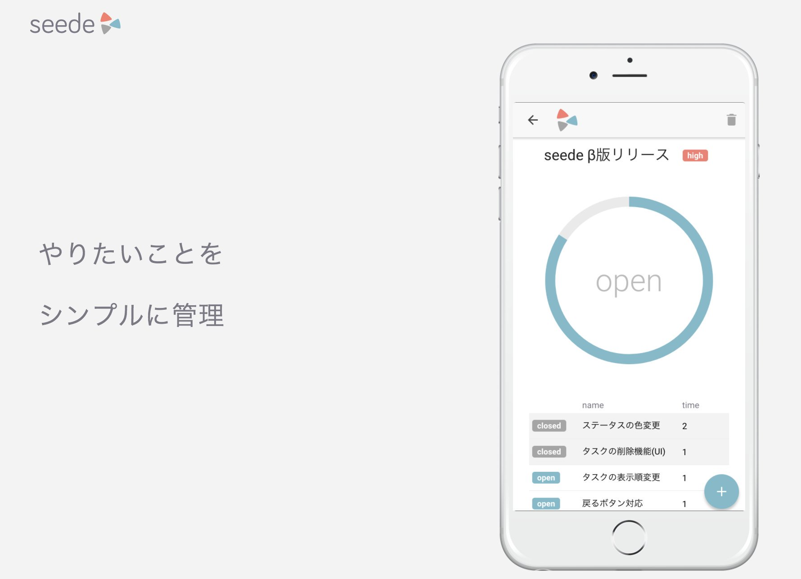

Techd creates web applications for making people happy.
I think that humans should do what humans are good at and
computers should do what computers are good at.
Happy engineering!
Portfolio

seede
Simple Task Manager
Technologies
These days, I often use the following technologies.